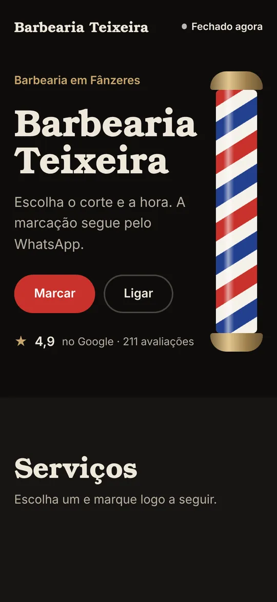
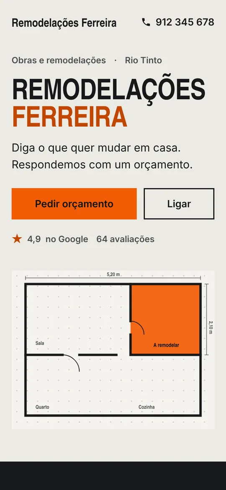
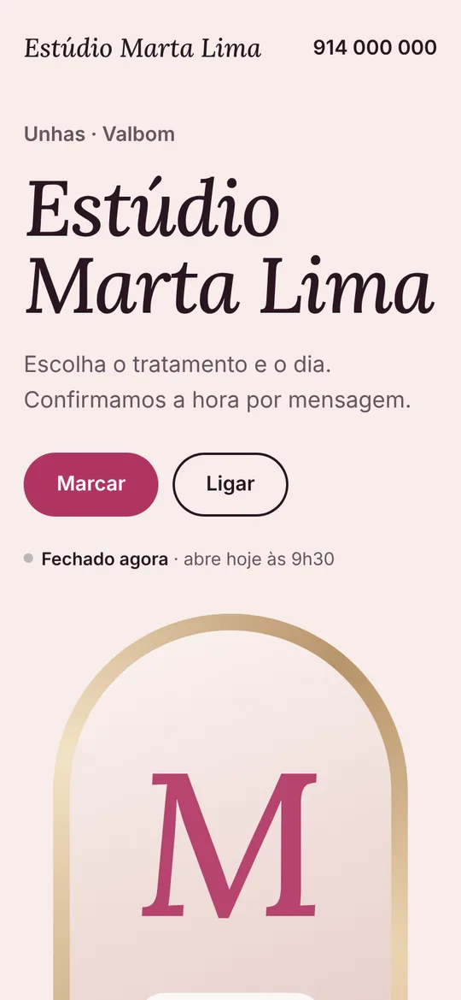
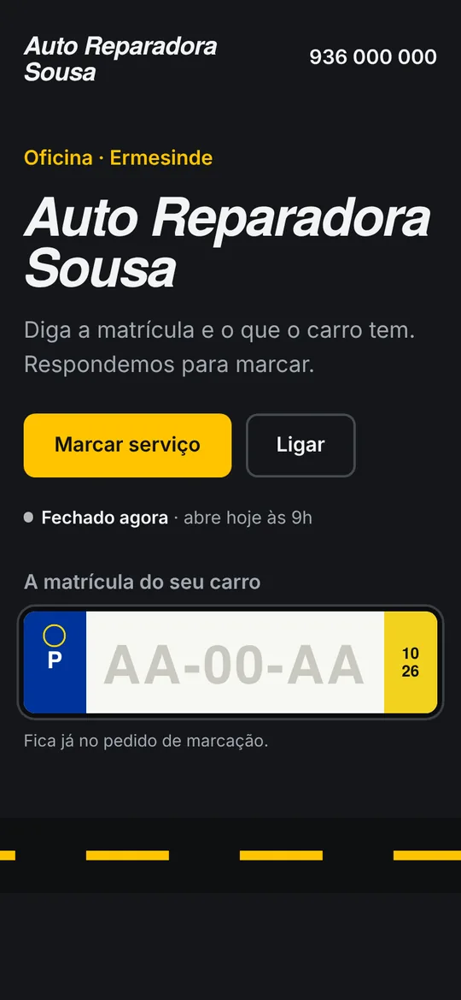

O seu site já está feito.
Faço o site do seu negócio antes de lhe pedir seja o que for. Se gostar, fica no ar em 48 horas por 149 €. Se não gostar, não paga nada.
Dinis Sousa · Gondomar e Grande Porto · 913 488 258




das microempresas tinham site em 2023.
Empresas com menos de 10 pessoas, em Portugal. Fonte: INE, via PORDATA.
Num estudo feito a empresas da região Centro, os travões mais apontados foram o custo, não saber tratar disso e a vontade de não mudar o que funciona.
O já está resolve as três: preço fechado, eu trato de tudo e vê o site pronto antes de decidir.
Se usava o site grátis da Google, esse site foi desligado em março de 2024.
Estudo EDDE-DIGITAL24 (2024, 425 empresas). Sites da Google: desligados a 1 de março de 2024.
Como funciona
O trabalho todo é meu. O seu é ver e dizer se gosta.
- Vejo
o seu negócio no Google: nome, horário, morada, contactos e o que os clientes dizem.
- Faço
o site com isso tudo, em três versões de cores. Os clientes marcam e ligam a partir do telemóvel.
- Mostro
ao vivo, na sua loja ou num link. Escolhe a versão de que gosta mais.
- Já está.
Disse que sim? Junto as suas fotos e fica no ar em 48 horas, com endereço próprio.
Exemplos
Cada ramo tem o seu desenho. Abra um e carregue nos botões, como se fosse cliente.
- BarbeariasAbrir exemplo
- Obras e remodelaçõesAbrir exemplo
- Estética e unhasAbrir exemplo
- OficinasAbrir exemplo
Os exemplos usam nomes inventados. O seu leva o nome, o horário e os contactos verdadeiros do seu negócio.
Preço fechado
Para comparar: nas listas de preços públicas que encontrei em Portugal, um site de uma página custa de 297 € a 690 € + IVA (um freelancer e um estúdio, outubro de 2026).
Depois, 96 € por ano, com alterações pequenas incluídas. Sem fidelização.
Preço de lançamento para os 5 primeiros negócios. Depois, 249 €.- Site de uma página com o seu nome, serviços, horário e contactos
- Botões para ligar, mandar mensagem pelo WhatsApp e chegar lá
- Endereço próprio (onomedoseunegocio.pt), em nome do seu negócio
- As suas fotos, preços e textos, acertados consigo
- Pronto para o Google: dados do negócio, rapidez e telemóvel
Metade quando disser que sim, o resto com o site no ar. MB WAY ou transferência. Se não gostar, não paga nada.
Quero ver o meuPreço final, sem IVA a somar, com fatura-recibo. Se um dia quiser sair, o domínio é seu.
Precisa de mais páginas? Site completo por 299 €. Loja online desde 499 €.
Quem faz
Sou o Dinis Sousa. Vivo em Gondomar e faço sites para negócios daqui. Fala sempre comigo, do primeiro dia ao último.
Pode ver outros projetos meus em dinissousa.pt.
913 488 258Perguntas
As que os donos de negócio fazem mais vezes.
Já tenho Instagram. Preciso de um site?
O Instagram mostra o seu trabalho a quem já o segue. O site responde a quem procura no Google ou no Maps e quer saber, sem dar volta ao perfil, o horário, onde fica e como marcar. Os dois juntam-se: o site pode ter a ligação para o Instagram.
E se eu não gostar?
Não paga nada e a pré-visualização é apagada. Só paga a primeira metade depois de dizer que sim.
Quanto tempo demora?
O desenho já está feito quando o vê. Depois de dizer que sim e de me mandar as fotos, fica no ar em 48 horas.
Tenho de pagar todos os meses?
Não. Paga 149 € para pôr o site no ar, com o 1.º ano de domínio e alojamento incluído. Do 2.º ano em diante são 96 € por ano, de uma vez, se quiser continuar comigo. Sem fidelização.
O endereço fica em nome de quem?
Do seu negócio. Se um dia quiser mudar de pessoa, leva o domínio consigo.
E se precisar de mudar um preço ou o horário?
Manda-me uma mensagem e eu trato. As pequenas alterações estão incluídas.
Como pago?
Por MB WAY ou transferência bancária, com fatura-recibo. Metade quando disser que sim, o resto quando o site estiver no ar.
Indique um negócio
Conhece um negócio sem site? Diga-me qual. Se avançar, recebe 20 € por MB WAY.
Indicar um negócio